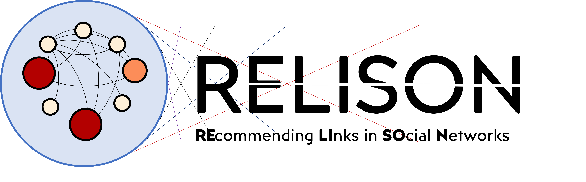

RELISON is a Java framework for experimentation on the link recommendation task in social networks, which aims to identify those people in the network with whom a user might be interested to connect, interact or befriend. RELISON provides tools for executing and evaluating contact recommendation approaches, considering not only their accuracy, but also aspects like their novelty, diversity and the effects that such recommendations have on global properties of the networks (as changes in the structural properties or in the characteristics of the information arriving to the users). In order to measure these effects, RELISON also provides functionality for a) analyzing the structural properties of social networks, b) detecting clusters of users (communities) and c) simulating the diffusion of information in a social network. These functionalities can be used regardless of whether recommendations have been provided to the users.
Built upon the RankSys library, this framework has been programmed with Java 14 and has been created as the result of the research documented in several publications on contact recommendation in social networks and a PhD thesis. The code is licensed under the Mozilla Public License v.2.0
Developers: RELISON has been developed by the Information Retrieval Group at Universidad Autónoma de Madrid. In particular, this tool has been developed by: